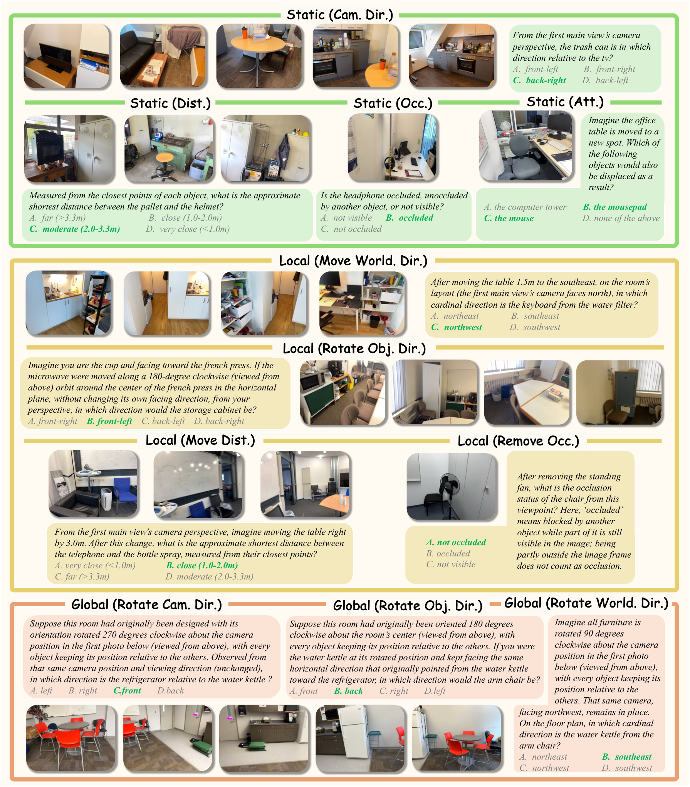

Task Definition
01 · Prediction under a Specified Intervention
这里的预测不是根据物体速度外推下一秒的位置。模型看到初始场景的若干视图，随后收到“把桌子向某方向移动”“移除遮挡物”或“旋转完整布局”等明确干预，再判断干预后两个对象的方向、距离、遮挡或依附关系。与 SpatialMind 的视频未来状态问题相比，这篇更接近受控的 what-if 推理。
设初始三维状态为 S₀、变换为 T、变换后状态为 S₁。数据构建器可以计算 S₁=F(S₀,T)，但模型常规输入只有来自 S₀ 的有序 RGB 观测 O、文字 T 与问题 q，输出选项答案。完整三维网格、真值位姿和变换后的图像用于构造或分析，不属于默认输入。
这个分解把错误来源分为三个阶段：是否从多视图恢复初始关系，是否正确应用变换，是否在指定参考系下读出最终关系。它没有要求模型显式输出三维地图，所以答题准确率本身不能证明模型内部形成了度量一致的持久场景表示。
S₁ = F(S₀,T) Model input: (O(S₀), T, q) Model output: a ∈ answer options
Data Construction
02 · Figure 2: From Scans to Verifiable Questions

Hongxing Li et al. · 2026 · CC BY 4.0 · Unmodified original figure · Paper & Caption ↗
原图第一步从 ScanNet 和 ScanNet++ 的扫描提取实例几何、对象类型与依附图。依附图用接触、支撑区域重叠和语义兼容等线索建立，每个子节点至多有一个父节点；移动一个根对象时，其依附后代一起变换。例如移动承载物时，问题需要区分哪些对象随之移动，哪些只是空间邻近。
第二步构造视图链。两个锚点分别展示查询所需的不同对象组，避免一个终点图像直接同时给齐答案。中间桥接视图通过深度验证的空间走廊连接两组位置。相邻视图至少覆盖该走廊长度的 10% 共同区间，并要求向另一端推进；这里的重叠不是图像像素 IoU。最多使用六个桥接视图。
第三步在三维状态上施加受控变换，调用关系引擎重新计算标签。第四步用自动规则排除越界、碰撞和边界歧义，再由人工核验。这个顺序让问题答案依赖可计算几何，而不是由另一个语言模型自由猜出未来关系。
评测共 182 个室内场景：134 个 ScanNet 场景贡献 718 题，48 个 ScanNet++ 场景贡献 3,144 题。13 类跨视图任务共 3,328 题，另外三类采用单锚点设定。按场景数量与按问题数量理解数据分布会得到不同印象，不能只看场景数认为两来源贡献相近。
Necessary Concepts
03 · Figure 3: Relations, Frames, and Transformation Scope

Hongxing Li et al. · 2026 · CC BY 4.0 · Unmodified original figure · Paper & Caption ↗
原图绿色区域是静态感知，S₁=S₀；黄色是局部变换，改变指定对象及其依附后代；橙色是全局变换，旋转整个布局。三层分别含六、七、三类任务，共 16 类。它们按变换范围组织，不是保证逐层变难的难度等级。
方向需要先指定参考系。Camera-centric 用指定相机的朝向定义前后左右；object-centric 用指定对象的朝向；world-centric 用房间或文字给定的世界方向。同一对物体可以在不同参考系中得到不同答案，参考系变化不能被误读为物体本身移动。
局部 orbit 是绕固定中心做 45、90、135 或 180 度公转，同时保持自身朝向；它不是原地自转。全局任务则将布局旋转 90、180 或 270 度，但指定观察相机保持原位和朝向。若把后者误解成相机绕房间运动，就已经改变了题目。
距离由两个对象表面最近点定义，并离散为小于 1 米、1–2 米、2–3.3 米、大于 3.3 米四档；距档位边界 0.1 米内的例子被剔除。遮挡通过变换后的完整剩余网格射线检测，区分部分可见但被遮挡、无遮挡和不可见。依附题要求选对全部后代集合，不能只猜中其中一个。
Results
04 · Evaluation Protocol and the Main Gap
3,862 题中，静态 1,368 题、局部 1,709 题、全局 785 题；后两类共 2,494 题，其中 2,217 题关系改变，277 题保持不变。保留不变例子很重要，否则模型可能只学到“发生变换就换一个答案”的偏置。
总分是 16 类任务准确率的宏平均，即每种任务等权。它不是全部问题合并后的正确率，也不能把静态、局部、全局三个分数简单等权平均，因为三组分别包含六、七、三类。随机基线为 25.9%，由不同选项数与题型组成决定，不是统一的四选一 25%。
论文比较 21 个模型，最高的 Gemini 3.5 Flash 总分为 58.0%，人类宏平均为 87.2%，相差 29.2 个百分点。空间专门模型在本文设定下约为 25.7–29.1%；这说明原有训练并不自然迁移到这组干预题，不能进一步概括成它们在所有空间任务上都没有能力。
最高分模型的局部变换得分 45.3，低于全局变换 69.4。局部变换常需要重新计算部分对象间关系，完整布局的刚体变换却保留大量内部结构。因此，“全局”这个名称并不自动意味着更难。桥接视图增加时，六模型平均的世界方向分数从 39.9 降至 34.6，也提示跨视图整合本身已经是瓶颈。
Overall = (1/16) Σ_(k=1…16) Accuracy(task k) Overall = (6 Static + 7 Local + 3 Global) / 16
Diagnostic Experiments
05 · What Additional Spatial Evidence Changes
作者分别给模型额外的初始俯视图、文字三维元数据，以及生成的变换后图像或视频，以定位困难所在。文字三维元数据显著减少从图像估计坐标的负担，因此它属于带额外信息的诊断条件，不能与普通 RGB 输入的主表直接合并比较。
在被选取的模型组中，三维元数据带来的平均变化为商业模型 +30.7 个百分点、开放模型 +10.9 个百分点、空间专门模型 −3.3 个百分点。这说明同一几何证据是否有用，还取决于模型能否读取其表达方式；提供更明确的坐标并不保证所有模型受益。
另一条路径先生成未来图像再回答，但图像生成本身可能改错对象、改变形状或未执行目标变换。在 600 道局部问题的人工审计中，Qwen-Image-Edit 的错误回答里有 80.3% 伴随生成失败，GPT-Image-2 对应为 38.3%。分母是错误回答，不能把这两个数写成所有生成样本的失败率。
这些实验支持把“构造正确的未来状态”和“读出该状态中的关系”分开研究。它们尚不能证明生成式世界模型一定不适合空间推理，也不能说明把任意三维信息接到 VLM 就能稳定解决问题。
Training and Inference
06 · Training Data and Supervised Adaptation
训练使用与评测场景分离的 54 个场景，共 12,249 个独立问题。训练日程中的 24,576 次样本暴露包含重复采样，不是新的独立题目数。场景级分离降低对相同房间布局直接记忆的影响，但仍是在相同任务生成机制下进行学习。
Mixed SFT 混合全部任务训练；Staged SFT 先学习静态关系，再训练局部和全局变换，同时回放静态样本。两者都以 Qwen3-VL-4B 为基础，使用 rank 32、alpha 64、dropout 0.05 的 LoRA，作用于语言模型线性层和多模态对齐模块，视觉编码器冻结。语言与对齐模块学习率分别为 1e−4 与 1e−5。
分阶段方案总分 65.7，混合方案 64.8，差距为 0.9 个百分点。相对于基础模型 34.0 的大部分提升来自有针对性的监督适配；不能把全部 31.7 点提升都归功于课程顺序。分阶段方案局部题较好，但全局题低于混合方案，收益存在任务间取舍。
论文还测试 GRPO：按答案正确性与格式奖励优化，使用不同 LoRA rank、冻结范围和优化设置，总分为 37.7。它在该配置下没有达到 SFT 的效果，但不是控制所有因素后的训练范式优劣结论。常规推理仍然是读取初始视图与变换描述再作答，不要求先输出未来图像。
| Qwen3-VL-4B | Static ↑ | Local ↑ | Global ↑ | Overall ↑ |
|---|---|---|---|---|
| Base | 39.9 | 33.7 | 22.8 | 34.0 |
| Mixed SFT | 76.4 | 51.3 | 73.1 | 64.8 |
| Staged SFT | 76.7 | 54.0 | 70.8 | 65.7 |
| GRPO | 40.3 | 32.0 | 45.7 | 37.7 |
Limitations
07 · Transfer Results and the Scope of the Benchmark
域外评测涉及 MMSI、SPARTQA、MindCube、CLEVRER、VSI-Bench 和 DSI-Bench 的选定题型子集。分阶段 SFT 的六组平均从 33.5 提高到 38.1，混合 SFT 为 37.2；这属于有限范围的迁移证据，不是六个完整基准的统一提升。MindCube 分项还低于基础模型，因此应同时看均值与单项。
可控变换让标签更容易核验，也限定了能力范围。依附图采用离散父子关系，变换会排除明显越界与新碰撞，但不模拟摩擦、形变、滑落或连续接触动力学。论文所说的预测主要是几何状态变换，而不是完整物理未来预测。
多选答案也不能直接检验预测坐标的连续误差、三维地图一致性或长期记忆开销。对 reconstruction memory 来说，它更适合作为后续关系查询的补充评测；要声称 memory 改善，仍需测量历史证据保存、关联、容量与重建指标。
Personal Analysis
08 · Reproduction Entry Points and Reading Connections
官方仓库提供评测、预测重评分与数据导出入口，数据由 Hugging Face 发布。README 区分 direct 与 cot 两种提示模式，并保存预测、逐题结果和运行配置；复现时应为模型与提示模式分开输出目录。宏平均应以完整 16 类任务计算，少量试跑只用于检查接口，不作为主表成绩。
与 SpatialMind 对照，可以把预测任务分成两条轴：已发生运动的时间外推，以及指定干预下的关系重计算。前者需要估计动态，后者需要正确保存状态并执行操作。两篇共享空间表示需求，但监督目标不同，不能因为都出现 foresight 或 predictive 就把它们视作同一种任务。
个人理解，这篇对语义几何记忆最具体的启发是给记忆提出可检验的查询：它是否保留了对象身份、参考系与依附关系，足以在局部状态改变后更新答案？这是下游检验思路；本文的 SFT 结果并没有直接证明对象槽位、语义读写或固定容量 memory 的有效性。
Discussion
Reading Questions
Is this motion forecasting from a video prefix?
不是主要设定。模型接收明确指定的干预，推断它改变后的空间关系；SpatialMind 则包含根据已观察动态推断未来状态的问题。
Does global prediction mean the camera rotates?
不是。这里完整布局发生旋转，指定观察相机保持原位和朝向。混淆两者会改变方向关系的计算。
Does staged SFT account for the entire improvement?
不能。基础模型到分阶段 SFT 的总差距为 31.7 点，而混合 SFT 已达到 64.8，分阶段仅再增加 0.9 点。应把数据监督收益与训练顺序收益分开。
Can the result validate a streaming memory module?
不能单独验证。它测量问答结果，没有固定容量和逐帧更新约束；可以在另设流式协议后作为语义关系查询的下游指标。
References
- Paper · arXiv:2610.12402v1 ↗
- Submission History ↗
- Official Evaluation Repository ↗
- Official Dataset ↗
- License · Paper Figures · CC BY 4.0 ↗
Original figures reproduced under CC BY 4.0; figure numbers and source links refer to the version listed above. Explanations and analysis are personal reading notes.
Verified on 2026-10-13. Paper results refer to the linked versions. Repository references were checked on this date.